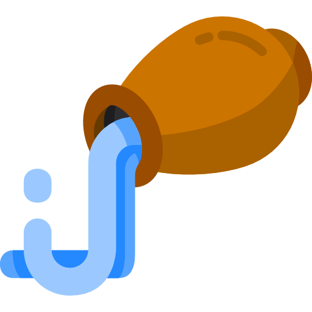
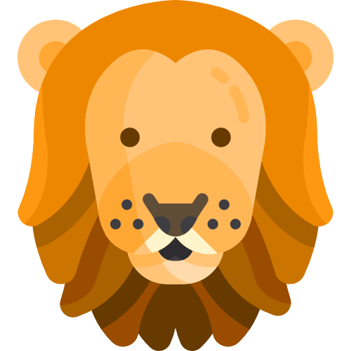
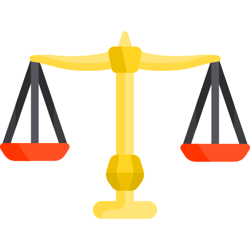
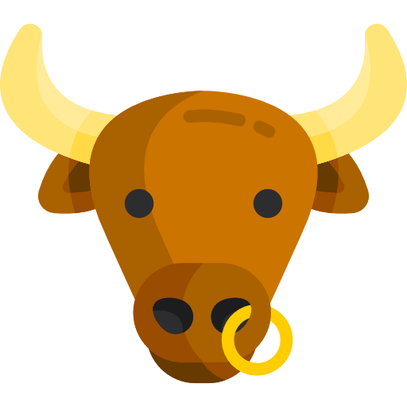
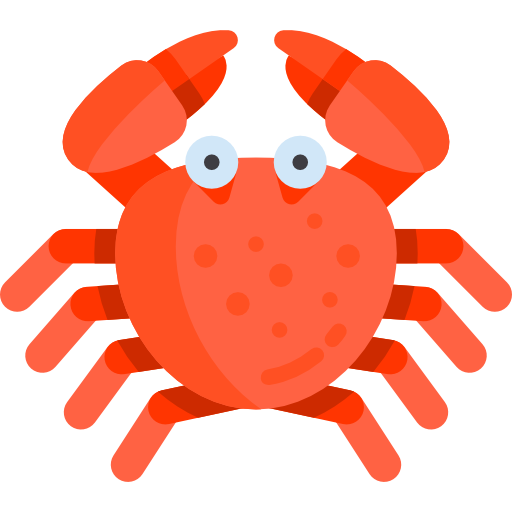
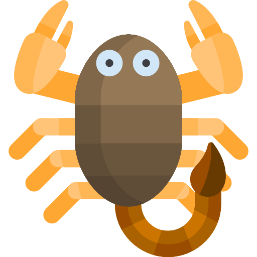
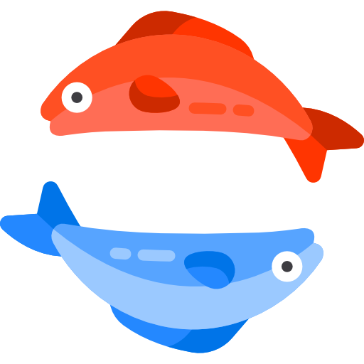
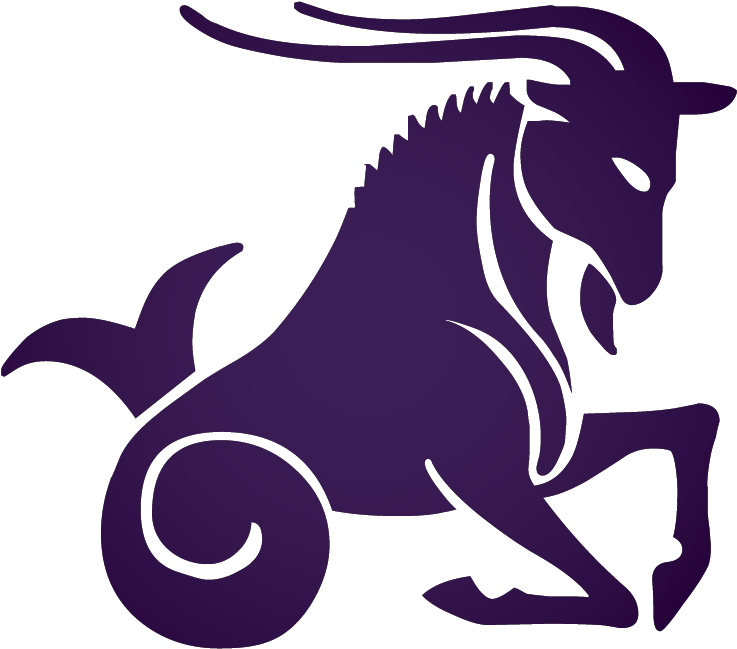

Aries
Aries are spontaneous and courageous. They have a sense of adventure and love to explore. They're determined and bold, and are good at initiating new projects. They have high energy and can initiate quick actions.

Aquarius
Aquarius people are advanced, self-reliant, clever, exceptional, and optimistic. Air is their elemental sign. Aquarians, like air, lack a distinct form and appear to resist classification. Others are enthusiastic and active, while other Aquarians are calm and sensitive.

Leo
Compassion and big-heartedness, consciousness, drive, and natural leadership are the four main characteristics of the Leo personality. Leos are known for their generosity of time, energy, respect, and money. As a result, Leos are attracted to others. Leos have a natural sense of self-assurance.
Gemini
Known to be extremely adjusting as well as having excellent communication skills, Gemini's are one of the most friendly and cheerful people to be with. They will turn your frown into a smile within minutes and time will seem to fly once you're with a Gemini. Gemini's can easily adjust to any surroundings.

Libra
Libras are known for being charming, beautiful, and well-balanced. They thrive on making things orderly and aesthetically pleasing. They also crave balance, and they can be equally as self-indulgent as they are generous. Libras are also the kings and queens of compromise, and they like making peace between others.
Virgo
You are a perfectionist who is preety critical about every other matter. Others praise your critical and analytical thinking as you can deal with difficult situations in a very thoughtful and smart manner. You also see a clear goal, that will help you bag the winner title.

Taurus
They generate satisfaction and respect in people around them because they are pleasant, loving, and honest. Taurus natives have a strong desire for social and corporate stability. They have a strong desire for extravagance, contentment, and great things, which can lead to intense neediness.

Cancer
Representatives of this sign are prone to emotional outbursts, refined feelings, and exalted feelings. They are not interested in material things. However, Cancers love to make money and buy good things. The main thing in the life of such people is family ties. Cancers primarily think about how well their loved ones are.
Sagittarius
Sagittarians are optimistic, lovers of freedom, hilarious, fair-minded, honest and intellectual. They are spontaneous and fun, usually with a lot of friends, and are perhaps the best conversationalists in the zodiac

Scorpio
They are loyal and connect with people on a deep emotional and intellectual level. Honesty is key with Scorpios in all types of relationships, and you can be sure that a Scorpio will show up when you need them.

Pisces
The character of the representatives of this sign is distinguished by lightness, romance, melancholy. Pisces does not have a lot of vitality and strong stoicism. They love to wait out difficult times under someone’s protection, but few people complain about this. Pisces has a lot of emotional warmth, so they can win even a cold heart.

Capricon
They are ambitious, determined, materialistic and strong. They will keep going when others would've given up ten miles back. This makes them great partners in life, as well as friends or collaborators. Capricorns tend to keep small circles, but are loyal and supportive of their friends and loved ones.